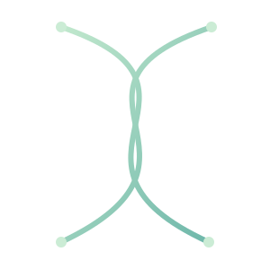

Extracellular RNA Pathways and Specificity
In our recent collaborative work with the Innes lab (Borniego et al. 2025), we showed that diverse classes of plant RNAs accumulate on the surface of Arabidopsis thaliana leaves an…
Read projectInvestigating how RNAs are processed, modified, secreted, and stabilized, and how they shape communication between cells, plants, and microbes.

The exRNA Lab at the UC Davis Genome Center explores how small RNAs, RNA modifications, and extracellular RNAs (exRNAs) shape communication between plants, microbes, and their environment. We combine molecular biology, genetics, and high-throughput sequencing with computational approaches to uncover mechanisms of RNA processing, movement, and function. Our projects range from understanding RNA trafficking in plant–microbe interactions to engineering crops for stress resilience.
Beyond the bench, we are deeply committed to mentoring, inclusive science, and building collaborative networks that bridge disciplines and communities.
We welcome collaborators, students, and anyone who shares our curiosity about how RNA shapes life to connect with us. Whether you’re a researcher exploring plant–microbe communication, an engineer developing new RNA technologies, or a student eager to learn, we’re always open to new ideas and partnerships. If our work resonates with you, we’d love to hear from you; reach out and join us in exploring how RNA connects plants, microbes, and the world around them.
In our recent collaborative work with the Innes lab (Borniego et al. 2025), we showed that diverse classes of plant RNAs accumulate on the surface of Arabidopsis thaliana leaves an…
Read projectSoybean nodules offer an ideal system for dissecting RNA-mediated regulation of symbiosis. Through dual RNA-seq and small RNA profiling from 2–10 weeks post-inoculation, we identif…
Read projectIn our study on maize root exudates (Henry, C. et al, 2025, in preparation), we developed a non-invasive rhizosampling method that enables the repeated capture of metabolites and m…
Read projectI’m excited to be heading to #PlantBiology2026 in Ottawa, Canada this week!…
Read postThis week, I had the very special opportunity to return to the place where I defended my PhD and give a talk at Centre for Research in Agricultural Ge…
Read postScience has a way of connecting past and future in the most tangible places. During my visit to the Boyce Thompson Institute (BTI), I had the chance t…
Read postWe welcome conversations with researchers, students, and partners interested in RNA biology and the interfaces between plants and their environment.